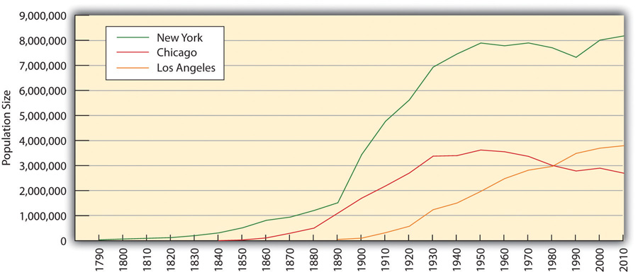
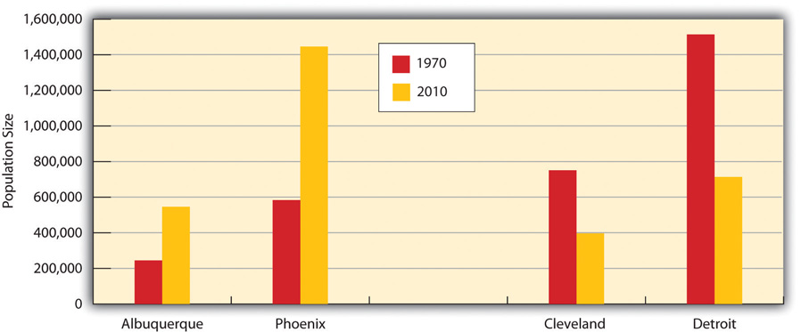
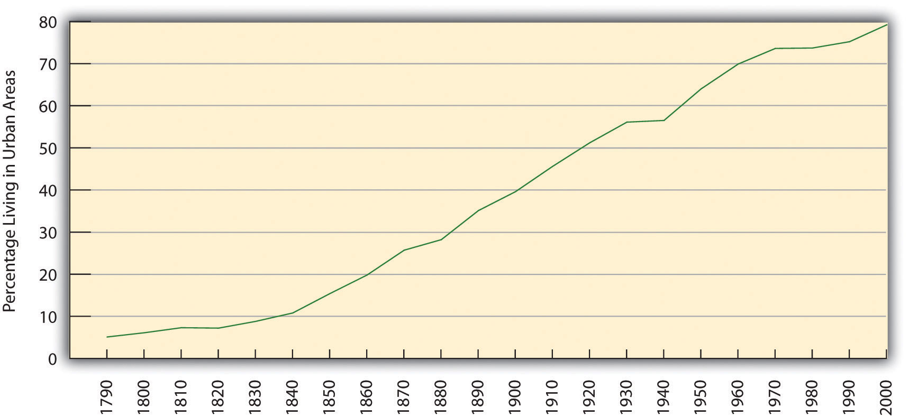
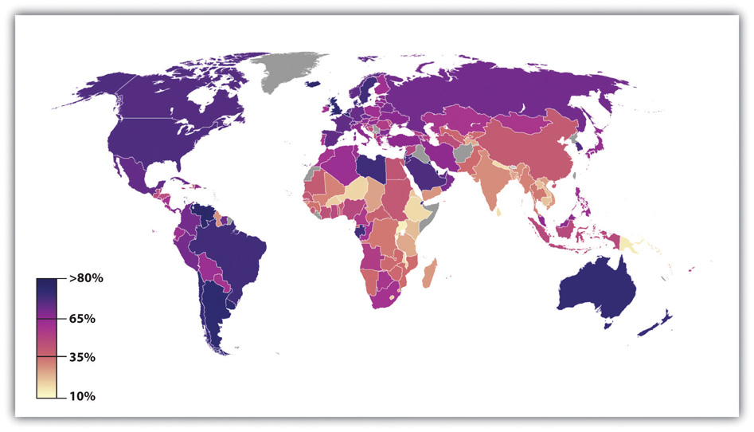

“Downtown Decay Poses Problem for Community,” the headline said. The downtown district of Charleston, South Carolina, has some of the most beautiful older homes in the country, but it also has its share of dilapidated housing. According to the news article, “There are two distinct sides to downtown Charleston, the postcard perfect homes and the crumbling, rundown houses. Dilapidated buildings near the crosstown aren’t just eyesores, they’re becoming safety hazards.” A neighborhood activist criticized city officials for ignoring the problem of rundown, dangerous houses. “It’s out of sight, out of mind,” he said. Ignoring this problem “wouldn’t happen in the tourist areas,” he added, “but why should it happen in the community where people live and work every day?”
Source: Davenport, 2012.Davenport, M. (2012, January 11). Downtown decay poses problem for community. WCSC TV. Retrieved from http://www.live5news.com/story/16501227/downtown-decay-poses-problem-for-community.
America’s cities are centers of culture, innovation, fine dining, world-class medical research, high finance, and so many other hallmarks. Yet, as this news story from Charleston reminds us, our cities also have dilapidated housing and many other problems. So do the nation’s rural areas. This chapter examines urban and rural problems in the United States.
We will see that many of these problems reflect those that earlier chapters discussed. But we will also see that some problems are worse in cities precisely because they are cities (and therefore are crowded with traffic and many buildings and people). And we'll see that some problems are worse in rural areas precisely because they are rural (and therefore are isolated with long distances to travel). These defining features of cities and rural areas, respectively, should be kept in mind as we examine the problems occurring in these two important settings for American life.
One of the most significant changes over the centuries has been urbanizationThe rise and growth of cities., or the shift from rural areas to large cities. Urbanization has had important consequences for many aspects of social, political, and economic life (Kleniewski & Thomas, 2011).Kleniewski, N., & Thomas, A. R. (2011). Cities, change, and conflict (4th ed.). Belmont, CA: Wadsworth.
The earliest cities developed in ancient times after the rise of horticultural and pastoral societies made it possible for people to stay in one place instead of having to move around to find food. Because ancient cities had no sanitation facilities, people typically left their garbage and human waste in the city streets or just outside the city wall (which most cities had for protection from possible enemies). This poor sanitation led to rampant disease and high death rates. Some cities eventually developed better sanitation procedures, including, in Rome, a sewer system. Still, the world remained largely rural until the industrialization of the nineteenth century. We return to industrialization shortly.
During the American colonial period, cities along the eastern seaboard were the centers of commerce and politics. Boston, New York, and Philadelphia were the three largest cities in population size. Yet they were tiny in comparison to their size today. In 1790, the year after George Washington became the first president of the new nation, New York’s population was only 33,131; Philadelphia’s was 28,522; and Boston’s was 18,230 (Gibson, 1998).Gibson, C. (1998). Population of the 100 largest cities and other urban places in the United States: 1790–1990. Washington, DC: US Census Bureau. Today, of course, cities of this size are called small towns. New York’s population is vastly higher, at about 8.2 million; Philadelphia’s is 1.5 million; and Boston’s is 618, 000.
US cities became more numerous and much larger during the nineteenth century because of two trends. The first was immigration, as waves of immigrants from Ireland and then Italy and other nations began coming to the United States during the 1820s. The second was industrialization, as people moved to live near factories and other sites of industrial production. These two trends were momentous: People crowded together as never before, and they crowded into living conditions that were often squalid. Lack of sanitation continued to cause rampant disease, and death rates from cholera, typhoid, and other illnesses were high.
Muckraker Lincoln Steffens wrote a classic work, The Shame of the Cities, that criticized the municipal corruption characterizing many US cities at the turn of the twentieth century.
Source: “Lincoln Steffens,” Wikipedia, Last modified August 19, 2009, http://commons.wikimedia.org/wiki/File:Lincoln_Steffens.jpg.
Crime also became a significant problem, as did riots and other mob violence beginning in the 1830s. This type of mass violence was so common that the 1830s have been called the “turbulent era” (Feldberg, 1980).Feldberg, M. (1980). The turbulent era: Riot and disorder in Jacksonian America. New York, NY: Oxford University Press. Most of this mass violence was committed by native-born whites against African Americans, Catholics, and immigrants. Native whites resented their presence and were deeply prejudiced against them. During the three decades beginning in 1830, almost three-fourths of US cities with populations above 20,000 had at least one riot. This wave of mass violence in the nation’s cities led Abraham Lincoln to lament, “Accounts of outrages committed by mobs form the everyday news of the times…Whatever their causes be, it is common to the whole country” (Barkan & Snowden, 2008, p. 34).Barkan, S. E., & Snowden, L. L. (2008). Collective violence. Cornwall-on-Hudson, NY: Sloan.
American cities grew even more rapidly after the Civil War as both industrialization and immigration continued. By the early years of the twentieth century, US cities on the East Coast were almost unimaginably crowded, and their living conditions continued to be wretched for many of their residents. Their city governments, police forces, and business worlds were also notoriously corrupt. In 1904, Lincoln Steffens, a renowned “muckraking” journalist, published his classic work, The Shame of the Cities (Steffens, 1904),Steffens, L. (1904). The shame of the cities. New York, NY: McClure, Phillips. which was a collection of six articles he had written for McClure’s Magazine. In this book, Steffens used biting prose to attack the municipal corruption of the times in Chicago, Philadelphia, St. Louis, and other cities. In the original articles that compose the book, he named names: He listed by name people who gave and received bribes and those who were corrupt in other ways. A decade earlier, another muckraker, Jacob Riis, had published How the Other Half Lives: Studies among the Tenements of New York (Riis, 1890),Riis, J. (1890). How the other half lives: Studies among the tenements of New York. New York. NY: Charles Scribner’s Sons. a book of searing photographs of poverty in the largest US city. The books by Steffens and Riis remain as vivid reminders of what cities were like a century ago, and perhaps are still like today in some respects.
As Americans moved west after the Civil War and during the twentieth century, western cities appeared almost overnight and expanded the pace of urbanization. Continued industrialization, immigration, and general population growth further increased the number and size of US cities. Internal migration had a similar impact, as waves of African Americans moved from the South to Chicago and other northern cities.
Figure 14.1 Populations of Chicago, New York, and Los Angeles, 1790–2010
Note: New York annexed Brooklyn in 1898; therefore, New York’s population beginning in 1900 includes Brooklyn’s population.
Sources: Gibson, C. (1998). Population of the 100 largest cities and other urban places in the United States: 1790–1990. Washington, DC: US Census Bureau; US Census Bureau. (2012). Statistical abstract of the United States: 2012. Washington, DC: US Government Printing Office. Retrieved from http://www.census.gov/compendia/statab.
Figure 14.1 "Populations of Chicago, New York, and Los Angeles, 1790–2010" depicts the growth of Chicago, New York, and Los Angeles from 1790 to 2010. Chicago and Los Angeles first appear in the graph when they began to rank in the largest one hundred cities.
Note that the populations of New York and Chicago show some decline after 1950. This decline reflects two other trends affecting cities in the past half-century: (1) the movement of people from cities to suburbs; and (2) the movement of Americans from northern cities to southern and southwestern cities. Reflecting this second trend, and also reflecting increases in immigration from Mexico and Asia, southern and southwestern cities have grown rapidly during the past few decades. For example, during the 1970–2010 period, the populations of Albuquerque, New Mexico, and Phoenix, Arizona, more than doubled, while the populations of Cleveland, Ohio, and Detroit, Michigan, both fell by about half (see Figure 14.2 "Population Change from 1970 to 2010 for Selected Cities").
Figure 14.2 Population Change from 1970 to 2010 for Selected Cities
Source: US Census Bureau. (2012). Statistical abstract of the United States: 2012. Washington, DC: US Government Printing Office. Retrieved from http://www.census.gov/compendia/statab.
This trend in urbanization aside, the fact remains that the United States has become much more urbanized since its formation. Today, more than three-fourths of the US population lives in an urban areaDefined generally as an incorporated territory with a population of at least 2,500. (defined generally as an incorporated territory with a population of at least 2,500), and less than one-fourth lives in a rural area. As Figure 14.3 "Urbanization in the United States (Percentage Living in Urban Areas)" shows, the degree of urbanization rose steadily through the nineteenth and twentieth centuries before slowing down by the end of the last century.
Figure 14.3 Urbanization in the United States (Percentage Living in Urban Areas)
If the United States has urbanized during the last two centuries, so has much of the rest of the world. Only 3 percent of the world’s population lived in urban areas in 1800. By a century later in 1900, 14 percent of the world’s population lived in urban areas, and twelve cities had populations over 1 million. Just a half-century later in 1950, the world’s urban population had doubled to 30 percent, and the number of cities over 1 million grew six times to eighty-three cities.
Today, more than half the world’s population lives in urban areas, and the number of cities over 1 million stands at more than four hundred. By 2030, almost two-thirds of the world’s population is projected to live in urban areas. The number of megacitiesCities with populations over 10 million.—cities with populations over 10 million—rose from three in 1975 to sixteen in 2000, and is expected to reach twenty-seven by 2025 (Population Reference Bureau, 2012).Population Reference Bureau. (2012). Human population: Urbanization. Retrieved from http://www.prb.org/Educators/TeachersGuides/HumanPopulation/Urbanization.aspx.
Despite all this growth, the degree of urbanization still varies around the world (see Figure 14.4 "Percentage of World Population Living in Urban Areas"). In general, wealthy nations are more urban than poor nations, thanks in large part to the latter’s rural economies. Still, urbanization in poor nations is proceeding rapidly. Most megacities are now in, and will continue to be in, nations that are relatively poor or desperately poor. The number of urban residents in these nations will increase greatly in the years ahead as people there move to urban areas and as their populations continue to grow through natural fertility. Fertility is a special problem in this regard for two reasons. First, women in poor nations have high fertility rates. Second, poor nations have very high proportions of young people, and these high rates mean that many births occur because of the large number of women in their childbearing years.
Figure 14.4 Percentage of World Population Living in Urban Areas
Source: Adapted from http://en.wikipedia.org/wiki/File:Urban_population_in_2005_world_map.PNG.
Rapid urbanization poses both opportunities and challenges for poor nations. The opportunities are many. Jobs are more plentiful in cities than in rural areas and incomes are higher, and services such as health care and schooling are easier to deliver because people are living more closely together. In another advantage, women in poor nations generally fare better in cities than in rural areas in terms of education and employment possibilities (United Nations Population Fund, 2011).United Nations Population Fund. (2011). The State of World Population 2011. Retrieved from http://foweb.unfpa.org/SWP2011/reports/EN-SWOP2011-FINAL.pdf.
In large cities in poor nations, as this scene illustrates, many people live in deep poverty and lack clean water and sanitation.
But there are also many challenges. In the large cities of poor nations, homeless children live in the streets as beggars, and many people lack necessities and conveniences that urban dwellers in industrial nations take for granted. As the United Nations Population Fund (2007)United Nations Population Fund. (2007). Linking population, poverty, and development. Urbanization: A majority in cities. Retrieved from http://www.unfpa.org/pds/urbanization.htm. warns, “One billion people live in urban slums, which are typically overcrowded, polluted and dangerous, and lack basic services such as clean water and sanitation.” The rapid urbanization of poor nations will compound the many problems these nations already have, just as the rapid urbanization in the industrial world more than a century ago led to the disease and other problems discussed earlier. As cities grow rapidly in poor nations, moreover, these nations’ poverty makes them ill equipped to meet the challenges of urbanization. Helping these nations meet the needs of their cities remains a major challenge for the world community in the years ahead. In this regard, the United Nations Population Fund (2007)United Nations Population Fund. (2007). Linking population, poverty, and development. Urbanization: A majority in cities. Retrieved from http://www.unfpa.org/pds/urbanization.htm. urges particular attention to housing: “Addressing the housing needs of the poor will be critical. A roof and an address in a habitable area are the first step to a better life. Improving access to basic social and health services, including reproductive health care, for poor people in urban slums is also critical to breaking the cycle of poverty.”
Life in the megacity of Mumbai (formerly called Bombay) in India illustrates many of the problems facing large cities in poor nations. Mumbai’s population exceeds 12.4 million, with another 8 million living in the greater metropolitan area; this total of more than 20 million ranks Mumbai’s metropolitan population as the fourth highest in the world. An author who grew up in Mumbai calls his city an “urban catastrophe.” He continued, “Bombay is the future of urban civilization on the planet. God help us” (Kotkin, 2011).Kotkin, J. (2011). A leg up: World’s largest cities no longer homes of upward mobility. Retrieved January 29, 2012, from http://www.newgeography.com/content/002051-a-leg-up-worlds-largest-cities-no-longer-homes-upward-mobility. A recent news story illustrated his bleak assessment with this description of life in Mumbai: “The majority of Mumbai’s population now lives in slums, up from one-sixth in 1971—a statistic that reflects a lack of decent affordable housing, even for those gainfully employed. Congested, overcrowded, and polluted, Mumbai has become a difficult place to live. The life expectancy of a Mumbaikar is now seven years shorter than an average Indian’s, a remarkable statistic in a country still populated by poor villagers with little or no access to health care” (Kotkin, 2011).Kotkin, J. (2011). A leg up: World’s largest cities no longer homes of upward mobility. Retrieved January 29, 2012, from http://www.newgeography.com/content/002051-a-leg-up-worlds-largest-cities-no-longer-homes-upward-mobility.
Once again the three major sociological perspectives offer important but varying insights to help us understand urbanization. Table 14.1 "Theory Snapshot" summarizes their assumptions.
Table 14.1 Theory Snapshot
| Theoretical perspective | Major assumptions |
|---|---|
| Functionalism | Cities serve many important functions for society but also have their dysfunctions. Functionalist theorists differ on the relative merits and disadvantages of urban life, and in particular on the degree to which a sense of community and social bonding exists within cities. |
| Conflict theory | Cities are run by political and economic elites that use their resources to enrich their positions and to take resources from the poor and people of color. The diversity of social backgrounds found in cities contributes to conflict over norms and values. |
| Symbolic interactionism | City residents differ in their types of interaction and perceptions of urban life. Cities are not chaotic places but rather locations in which strong norms and values exist. |
A basic debate within the functionalist perspective centers on the relative merits of cities and urbanization: In what ways and to what extent are cities useful (functional) for society, and in what ways and to what extent are cities disadvantageous and even harmful (dysfunctional) for society? Put more simply, are cities good or bad?
In essence, there is no one answer to this question, because cities are too complex for a simple answer. Cities are both good and bad. They are sites of creativity, high culture, population diversity, and excitement, but they are also sites of crime, impersonality, and other problems.
Since sociologists began studying urbanization in the early years of the discipline, an important question has been the degree to which cities are impersonal and alienating for their residents. In 1887, German sociologist Ferdinand Tönnies (1887/1963)Tönnies, F. (1963). Community and society. New York, NY: Harper and Row. (Original work published 1887) raised this question when he wrote about the changes that occurred as societies changed from small, rural, and traditional cultures to larger, urban, and industrial settings. He said that a sense of community, or GemeinschaftAccording to Ferdinand Tönnies, traditional societies in which family, kin, and community ties are quite strong, with people caring for each other and looking out for one another., characterizes traditional societies. In these societies, family, kin, and community ties are quite strong, with people caring for each other and looking out for one another. As societies grew and industrialized and as people moved to cities, he wrote, social ties weakened and became more impersonal. Tönnies called this type of society a GesellschaftAccording to Ferdinand Tönnies, the weakening of social ties and personal relationships as societies grow and become industrialized., and he was quite critical of this development. He lamented the loss in urban societies of close social bonds and of a strong sense of community, and he feared that a sense of rootlessness in these societies begins to replace the feeling of stability and steadiness characteristic of small, rural societies.
One of the key founders of sociology, French scholar Émile Durkheim, was more positive than Tönnies about the nature of cities and urbanized societies. He certainly appreciated the social bonds and community feeling, which he called mechanical solidarityAccording to Émile Durkheim, the social bonds and community feeling characteristic of small, rural societies., characteristic of small, rural societies. However, he also thought that these societies stifled individual freedom and that social ties still exist in larger, urban societies. He called these latter ties organic solidarityAccording to Émile Durkheim, the social ties that still exist in larger, urban societies, which stem from the division of labor., which he said stems from the division of labor. When there is a division of labor, he wrote, everyone has to depend on everyone else to perform their jobs. This interdependence of roles creases a solidarity that retains much of the bonding and sense of community found in small, rural societies (Durkheim, 1893/1933).Durkheim, É. (1933). The division of labor in society. London, United Kingdom: Free Press. (Original work published 1893)
Contemporary research tends to emphasize that strong social bonds do exist in cities (Guest, Cover, Matsueda, & Kubrin, 2006).Guest, A. M., Cover, J. K., Matsueda, R. L., & Kubrin, C. E. (2006). Neighborhood context and neighboring ties. City & Community, 5(4), 363–385. Although cities can be anonymous (think of the mass of people walking by each other on a busy street in the downtown area of a large city), many city residents live in neighborhoods where people do know each other, associate with each other, and look out for each other. In these neighborhoods, a sense of community and strong social bonds do, in fact, exist.

In many urban neighborhoods, people are friendly with each other and feel a strong sense of community.
Image courtesy of Hynek Moravec, http://commons.wikimedia.org/wiki/File:Delhi_Old_Delhi_Ulice2001.JPG,
In 1938, University of Chicago sociologist Louis Wirth wrote a very influential essay, “Urbanism as a Way of Life,” in which he took both a positive and a negative view of cities (Wirth, 1938).Wirth, L. (1938). Urbanism as a way of life. American Journal of Sociology, 44, 3–24. He agreed with Tönnies that cities have a weaker sense of community and weaker social bonds than do rural areas. But he also agreed with Durkheim that cities generate more creativity and greater tolerance for new ways of thinking. In particular, he said that urban residents are more tolerant than rural residents of nontraditional attitudes, behaviors, and lifestyles, in part because they are much more exposed than rural residents to these nontraditional ways. Supporting Wirth’s hypothesis, contemporary research finds that urban residents indeed hold more tolerant views on several kinds of issues (Moore & Ovadia, 2006).Moore, L. M., & Ovadia, S. (2006). Accounting for spatial variation in tolerance: The effects of education and religion. Social Forces, 84(4), 2205–2222.
An example of the greater tolerance of urban residents (and thus the lower tolerance of rural residents) appears in Figure 14.5 "Urban/Rural Residence and Belief That Premarital Sex Is “Always Wrong” (%)", which depicts the percentage of Americans in the nation’s twelve largest metropolitan areas and in its rural areas who say that premarital sex is “always wrong.” Rural residents are twice as likely as urban residents to feel this way.
Figure 14.5 Urban/Rural Residence and Belief That Premarital Sex Is “Always Wrong” (%)

Source: Data from General Social Survey. (2010). Retrieved from http://sda.berkeley.edu/cgi-bin/hsda?harcsda+gss10.
We just saw that functionalism has mixed views about the benefits and disadvantages of cities and urban life and thus of urbanization. In contrast to this ambivalence, conflict theory’s views are uniformly critical. In this regard, recall from Chapter 1 "Understanding Social Problems" that conflict theory assumes a basic conflict between society’s “haves” and “have-nots,” or between the economic and political elites and the poor and people of color. This type of conflict, says conflict theory, manifests itself especially in the nation’s cities, in which the “haves” and “have-nots” live very different lives. On the one hand, the rich in American cities live in luxurious apartments and work in high-rise corporate buildings, and they dine at the finest restaurants and shop at the most expensive stores. On the other hand, the poor and people of color live in dilapidated housing and can often barely make ends meet.
Beyond this basic disparity of city life, conflict theorists add that the diverse backgrounds and interests of city residents often lead to conflict because some residents’ beliefs and practices clash with those of other residents. In one of the earliest statements of this position, sociologist Thorsten Sellin (1938),Sellin, T. (1938). Culture conflict and crime (No. Bulletin 41): New York, NY: Social Science Research Council. who was writing during an era of mass immigration into American cities of people from other nations, said that crime is the result of “culture conflict.” In particular, he wrote that crime by immigrants often results from the clash of their traditional ways of thinking and acting with the norms of American society. As one example, he wrote that a father in New Jersey who had emigrated from Sicily killed a teenage boy who had slept with his daughter. The father was surprised when he was arrested by local police, because in the traditional Sicilian culture a man was permitted and even expected to defend his family’s honor by acting as the father did!
More recent applications of conflict theory to urbanization emphasize the importance of political economyThe interaction of political and economic institutions and processes., or the interaction of political and economic institutions and processes. In this way of thinking, political and economic elites in a city (bankers, real estate investors, politicians, and others) collaborate to advance their respective interests. Thus urban development often takes the form of displacing poor urban residents from their homes so that condominiums, high-rise banks and other corporate buildings, posh shopping malls, or other buildings favoring the rich can be built. More generally, these elites treat cities as settings for the growth of their wealth and power, rather than as settings where real people live, go to school, work at a job, and have friends and acquaintances. Sociologists John Logan and Harvey Molotch use the term growth machine ideology to characterize the view of the city that guides these elites’ policies and practices (Logan & Molotch, 2007).Logan, J. R., & Molotch, H. L. (2007). Urban fortunes: The political economy of place (2nd ed.). Berkeley, CA: University of California Press.
Consistent with the overall approach of symbolic interactionism, scholars of the city who take this approach focus on the nature of urban residents’ interaction with each other, the reasons for their patterns of interaction, and their perceptions of various aspects of urban life. Their work has yielded many rich, vivid descriptions of the urban life. Many and probably most of these accounts have concerned the lives of the poor and of people of color. The late Elliott Liebow wrote two of the most famous accounts. The first of these two was his majestic Tally’s Corner (Liebow, 1967), which depicted the lives of African American men who “hung around” a particular street corner in a large city. His second account was Tell Them Who I Am: The Lives of Homeless Women (Liebow, 1993),Liebow, E. (1993). Tell them who I am: The lives of homeless women. New York, NY: Free Press. which, as its title implies, depicted the lives of urban homeless women. Yet another classic account is William Foote Whyte’s (1943)Whyte, W. F. (1943). Street corner society: The social structure of an Italian slum. Chicago, IL: University of Chicago Press. Street Corner Society, which examined leadership in a street gang in Chicago, Illinois.
These and other accounts all depict cities as places where various norms and values prevail, in contrast to views of cities that depict them as wild, chaotic places. Building on these more positive accounts, recent work by sociologist Elijah Anderson emphasizes that most poor urban residents are “decent” (as they call themselves), law-abiding people who strongly disapprove of the crime and drug use in their neighborhoods (Anderson, 2000).Anderson, E. (2000). Code of the street: Decency, violence, and the moral life of the inner city. New York, NY: W. W. Norton. He also emphasizes that cities are filled with parks and other public settings in which people from different racial and socioeconomic backgrounds gather every day and interact in various ways that help foster interracial understanding. Anderson calls these settings “cosmopolitan canopies,” and says they “offer a respite from the lingering tensions of urban life and an opportunity for diverse peoples to come together…Through personal observation, they may come casually to appreciate one another’s differences and empathize with the other in a spirit of humanity” (Anderson, 2011, pp. xiv–xv).Anderson, E. (2011). The cosmopolitan canopy: Race and civility in everyday life. New York, NY: W. W. Norton. In this manner, writes Anderson, people from different races can at least partly overcome the racial tensions that afflict many American cities.
Other work in the symbolic interactionist tradition seeks to understand the different lifestyles of city residents. Sociologist Herbert Gans (1982)Gans, H. J. (1982). The urban villagers: Group and class in the life of Italian-Americans (Updated and expanded ed.). New York, NY: Free Press. authored a classic typology of urban residents based on their differing lifestyles and experiences. Gans identified five types of city residents.
The first type is cosmopolites. These are people who live in a city because of its cultural attractions, restaurants, and other features of the best that a city has to offer. Cosmopolites include students, writers, musicians, and intellectuals. Unmarried and childless individuals and couples are the second type; they live in a city to be near their jobs and to enjoy the various kinds of entertainment found in most cities. If and when they marry or have children, respectively, many migrate to the suburbs to raise their families. The third type is ethnic villagers, who are recent immigrants and members of various ethnic groups who live among each other in certain neighborhoods. These neighborhoods tend to have strong social bonds and more generally a strong sense of community. Gans wrote that all these three types generally find the city inviting rather than alienating and have positive experiences far more often than negative ones.
In contrast, two final types of residents find the city alienating and experience a low quality of life. The first of these two types, and the fourth overall, is the deprived. These are people with low levels of formal education who live in poverty or near poverty and are unemployed, are underemployed, or work at low wages. They live in neighborhoods filled with trash, broken windows, and other signs of disorder. They commit high rates of crime and also have high rates of victimization by crime. The final type is the trapped. These are residents who, as their name implies, might wish to leave their neighborhoods but are unable to do so for several reasons: they may be alcoholics or drug addicts, they may be elderly and disabled, or they may be jobless and cannot afford to move to a better area.
In thinking about this typology, it is important to keep in mind that city residents’ social backgrounds—their social class, race/ethnicity, gender, age, and sexual orientation—all influence the kind of lifestyle they tend to adopt and thus the type of resident they are according to the typology. As earlier chapters documented, these dimensions of our social backgrounds often yield many kinds of social inequalities, and the quality of life that city residents enjoy depends heavily on these dimensions. For example, residents who are white and wealthy have the money and access to enjoy the best that cities have to offer, while those who are poor and of color typically experience the worst aspects of city life. Because of fear of rape and sexual assault, women often feel more constrained than men from traveling freely throughout a city and being out late at night; older people also often feel more constrained because of physical limitations and fear of muggings; and gays and lesbians are still subject to physical assaults stemming from homophobia. The type of resident we are, then, in terms of our sociodemographic profile affects what we experience in the city and whether that experience is positive or negative.
Life in US cities today is certainly complex. On the one hand, many US cities are vibrant places, filled with museums and other cultural attractions, nightclubs, theaters, and restaurants and populated by people from many walks of life and from varied racial and ethnic and national backgrounds. Many college graduates flock to cities, not only for their employment opportunities but also for their many activities and the sheer excitement of living in a metropolis.
On the other hand, many US cities are also filled with abject poverty, filthy and dilapidated housing, high crime rates, traffic gridlock, and dirty air. Many Americans would live nowhere but a city, and many would live anywhere but a city. Cities arouse strong opinions, pro and con, because there are many things both to like and to dislike about cities.
By definition, cities consist of very large numbers of people living in a relatively small amount of space. Some of these people have a good deal of money, but many people, and in some cities most people, have very little money. Cities must provide many kinds of services for all their residents, and certain additional services for their poorer residents. These basic facts of city life make for common sets of problems affecting cities throughout the nation, albeit to varying degrees, with some cities less able than others to address these problems. This section examines several of these problems.
One evident problem is fiscal: Cities typically have serious difficulties in paying for basic services such as policing, public education, trash removal, street maintenance, and snow removal (at least in cold climates), and in providing certain services for their residents who are poor or disabled or who have other conditions. The fiscal difficulties that cities routinely face became even more serious with the onset of the nation’s deep recession in late 2007, as the term fiscal crisis was used again and again to describe the harsh financial realities that cities continued to face even after the recession officially ended in mid-2009 (McNichol, 2009).McNichol, D. A. (2009, May 1). Revenue loss putting cities in fiscal vise. New York Times, p. NJ1.
In early 2012, almost three years after the United States officially emerged from the recession, this fiscal crisis persisted. The mayor of Syracuse, New York, announced that her city faced a budget deficit of $16 million and called its fiscal problems “staggering” (Knauss, 2012).Knauss, T. (2012, January 26). Former Lt. Gov. Richard Ravitch to advise Syracuse on finances, Mayor Stephanie Miner says. The Post-Standard. Retrieved from http://www.syracuse.com/news/index.ssf/2012/01/former_lt_gov_richard_ravitch.html. Mayors in Rhode Island told their governor that their cities need fiscal aid from the state to prevent them from having to declare bankruptcy. One of the mayors said, “We all have the same issues. Something has to be done this year. We cannot have a study commission. We cannot say ‘we’ll wait until 2013 or 2014.’ This is do or die” (Klepper, 2012).Klepper, D. (2012, January 5). RI Gov., mayors say state must help cities now. The Boston Globe. Retrieved from http://www.boston.com/news/local/rhode_island/articles/2012/01/05/ri_gov_mayors_say_state_must_help_cities_now. Detroit, Michigan, was in danger of running out of money altogether and being taken over by its state government. The member of the US House of Representatives who represents Detroit said he was seeking aid from the federal government: “Bottom line, I’m asking for federal aid to avoid massive layoffs, especially for our public safety workers. That’s what we actually need to attract businesses here who create jobs. We need safe streets and we need good schools” (Oosting, 2012).Oosting, J. (2012, January 30). Rep. Hansen Clarke talks with president on Air Force One, seeks emergency aid for Detroit. Mlive.com. Retrieved from http://www.mlive.com/news/detroit/index.ssf/2012/01/rep_hansen_clarke_talks_with_p.html.
In response to financial problems in these and other cities across the nation, the US Conference of Mayors urged Congress in early 2012 to provide several kinds of aid to cities, including low-interest loans for local rail and road projects and funding for housing and job training for low-income residents (United States Conference of Mayors, 2012).US Conference of Mayors. (2012, January 24). Statement by US Conference of Mayors president Los Angeles Mayor Antonio Villaraigosa in reaction to President Obama’s State of the Union address. Retrived from http://www.usmayors.org/pressreleases/uploads/2012/0124-statement-sotu.pdf.
Urban Neighborhoods and Poor Health
Social scientists have long thought that poor urban neighborhoods pose, in and of themselves, significant health risks for their residents. These neighborhoods lack supermarkets with fresh fruits and vegetables, and they lack safe parks and other settings for exercise. They are also neighborhoods with high crime rates and thus much stress. For all these reasons, they should impair the physical health of their residents. Reflecting this argument, the residents of poor urban neighborhoods do, in fact, exhibit significant health problems compared to the residents of wealthier neighborhoods.
Although this argument might sound compelling, the residents of poor and wealthier neighborhoods might differ in other ways that affects their respective health. For example, people living in wealthier neighborhoods are generally more educated and more conscious of taking care of their health. If their health then is better than that of their counterparts in poor neighborhoods, it is difficult to know how much the neighborhood setting itself plays a role in the health of residents.
For this reason, a recent study of a real-life experiment provided compelling evidence of the importance of the quality of a neighborhood for one’s health. In the 1990s, the federal government conducted an experiment in which 1,800 poor urban women were randomly selected and, with their permission, assigned to move from their neighborhoods to wealthier neighborhoods. The women were studied a decade after they moved. In particular, they were weighed and had their blood checked for evidence of diabetes. Their results were then compared to women in their original neighborhoods who were not selected to move away. The women who did move away ended up with somewhat lower rates of diabetes and obesity than those who stayed behind.
The experimental design of this study allowed the researchers to conclude that the change in neighborhoods was the reason for their improvement in these two health measures. Reflecting this conclusion, the secretary of the US Department of Housing and Urban Development said, “This study proves that concentrated poverty is not only bad policy, it’s bad for your health.” A news report observed that the results of this study “offered some of the strongest support yet for the idea that where you live can significantly affect your overall health, especially if your home is in a low-income area.”
The results of this experimental study underscore the need to improve the living conditions of poor urban neighborhoods, as these conditions affect many life outcomes of the adults and children who live in them.
Sources: Ludwig et al., 2011; Stobbe, 2011Ludwig, J., Sanbonmatsu, L., Gennetian, L., Adam, E., Duncan, G. J., Katz, L. F., et al. (2011). Neighborhoods, obesity, and diabetes—a randomized social experiment. New England Journal of Medicine, 365(16), 1509–1519; Stobbe, M. (2011, October 20). Decade-long study links living in low-income neighborhoods to poor health. The Boston Globe, p. A15.
Another problem is crowding. Cities are crowded in at least two ways. The first involves residential crowding: large numbers of people living in a small amount of space. City streets are filled with apartment buildings, condominiums, row houses, and other types of housing, and many people live on any one city block. Residential crowding is perhaps the defining feature of any large city. In this regard, let’s compare the Manhattan borough of New York City with the state of Idaho. Roughly 1.6 million people live in each location. However, in Manhattan they are packed into only about 24 square miles, while in Idaho they live within 84,000 square miles. Manhattan’s population density, the number of people per square mile, is 68,000 people per square mile; Idaho’s population density is only about 19 people per square mile. Population density in Manhattan is thus 3,579 times (68,000 ÷ 19) greater than in Idaho.
New York is incredibly crowded, but other cities are also very crowded. Chicago’s population density, for example, exceeds 12,200 persons per square mile, while even a smaller city like Cincinnati (population 331,000) has a population density of 4,700 persons per square mile. Even a much smaller city like Ames, Iowa (population 51,000) has a population density of 2,360 persons per square mile. Population density in the small city of Ames is still 124 times greater than in the entire state of Idaho. Residential crowding is thus very high in almost any city in the United States compared to a rural area.
The second type of crowding is household crowding: Dwelling units in cities (apartments and houses) are typically small because of lack of space, and much smaller overall than houses in suburbs or rural areas. This forces many people to live in close quarters within a particular dwelling unit, especially if they are low-income individuals or families.
Some research finds that either type of crowding produces higher levels of stress, depression, aggression and crime. Here an interesting gender difference may exist (Regoeczi, 2008):Regoeczi, W. C. (2008). Crowding in context: An examination of the differential responses of men and women to high-density living environments. Journal of Health and Social Behavior, 49, 254–268. Household crowding may produce depression in women but not men, and aggression in men but not women.
Although crowding of both types is a problem, then, there is little that cities can do to reduce crowding. This fact underscores the need to undertake other efforts that might address the various consequences of residential and household crowding. In this regard, Chapter 8 "Crime and Criminal Justice" outlined several efforts to help reduce crime and delinquency.
A third problem involves housing. Here there are several related issues. Much urban housing is substandard, as this chapter’s opening news story illustrated, and characterized by such problems as broken windows, malfunctioning heating systems, peeling lead paint, and insect infestation.
At the same time, adequate housing is not affordable for many city residents, as housing prices in cities can be very high, and usually higher than in rural areas, and the residents’ incomes are typically very low. Cities thus have a great need for adequate, affordable housing. According to the US Department of Housing and Urban Development (2012),US Department of Housing and Urban Development. (2012). Affordable housing. Retrieved Janaury 31, 2012, from http://www.hud.gov/offices/cpd/affordablehousing. housing is affordable when a household pays no more than 30 percent of its annual income on housing. Low-income households that must spend more than this benchmark may be unable to afford clothing, food, health care, and transportation. Yet 12 million US households pay more than half their annual incomes for housing.
Another housing issue concerns racial segregation. Although federal law prohibits segregated housing, cities across the country are nonetheless highly segregated by race, with many neighborhoods all or mostly African American. In a widely cited book, sociologists Douglas S. Massey and Nancy A. Denton (1993)Massey, D. S., & Denton, N. A. (1993). American apartheid: Segregation and the making of the underclass. Cambridge, MA: Harvard University Press. termed this situation “American apartheid.” They said that these segregated neighborhoods result from a combination of several factors, including (a) “white flight” into suburbs, (b) informal—and often illegal—racially discriminatory actions that make it difficult for African Americans to move into white neighborhoods (such as real estate agents falsely telling black couples that no houses are available in a particular neighborhood), and (c) a general lack of income and other resources that makes it very difficult for African Americans to move from segregated neighborhoods.
Massey and Denton argued that residential segregation worsens the general circumstances in which many urban African Americans live. Several reasons account for this effect. As whites flee to the suburbs, the people left behind are much poorer. The tax base of cities suffers accordingly, and along with it the quality of city schools, human services, and other social functions. All these problems help keep the crime rate high and perhaps even raise it further. Because segregated neighborhoods are poor and crime ridden, businesses do not want to invest in them, and employment opportunities are meager. This fact worsens conditions in segregated neighborhoods even further. Consequently, concluded Massey and Denton, racial segregation helps to keep very poor people living in deep poverty and decaying neighborhoods.
Other research supports this conclusion. As a review of the research evidence summarized this situation, “Whether voluntary or involuntary, living in racially segregated neighborhoods has serious implications for the present and future mobility opportunities of those who are excluded from desirable areas. Where we live affects our proximity to good job opportunities, educational quality, and safety from crime (both as victim and as perpetrator), as well as the quality of our social networks” (Charles, 2003, pp. 167–168).Charles, C. Z. (2003). The dynamics of racial residential segregation. Annual Review of Sociology, 29, 167–207.
Against this pessimistic backdrop, it is worth noting that neighborhood segregation in US cities is somewhat less extensive now than four decades ago, thanks in part to fair-housing legislation enacted during the 1960s (Roberts, 2012).Roberts, S. (2012, January 31). Study of census results finds that residential segregation is down sharply. New York Times, p. A13. Despite this bit of progress, racial discrimination in the housing market continues (see Chapter 3 "Racial and Ethnic Inequality"), and most African Americans still live in neighborhoods that are heavily populated by African Americans and hence racially segregated (Logan & Stults, 2011).Logan, J. R., & Stults, B. J. (2011). The persistence of segregation in the metropolis: New findings from the 2010 census. Retrieved from http://www.s4.brown.edu/us2010/Data/Report/report2.pdf. One demographer summarizes this “good news, bad news” situation as follows: “There is now very much more black-white neighborhood integration than 40 years ago. Those of us who worked on segregation in the 1960s never anticipated such declines. Nevertheless, blacks remain considerably more segregated from whites than do Hispanics or Asians” (Roberts, 2012, p. A13).Roberts, S. (2012, January 31). Study of census results finds that residential segregation is down sharply. New York Times, p. A13.
To improve the socioeconomic status and living circumstances of African Americans, then, it is critical that residential segregation be reduced. Although Latinos live in segregated neighborhoods to a smaller degree, reducing segregation would also help their circumstances.
The Plight of Homeless Children
The faltering economy and wave of home foreclosures of the past few years resulted in what has been called a “national surge” of homeless children. The number of children who are homeless at least part of the year now reaches more than 1.6 million annually, equal to more than 2 percent of all American children. Because of their circumstances, they are at greater risk than their housed peers for hunger, asthma and other chronic health conditions, and stress and emotional problems.
They are at also greater risk for poor school performance. Amid the surge in children’s homelessness, the nation’s schools marshaled their resources to help their homeless children. An official with a private charity that helps poor families pointed out the obvious problem: “It’s hard enough going to school and growing up, but these kids also have to worry where they’ll be staying that night and whether they’ll eat. We see 8-year-olds telling Mom not to worry, don’t cry.”
School districts began sending special buses to homeless shelters, motels, and other settings for homeless children and their parents so that the children could continue attending their regular school. They also assigned social workers to help homeless families and other personnel to bring them school supplies, to drive them to look at shelters where they could live, and to perform other tasks. Federal legislation in fact requires schools to take extra measures to help homeless children, but school superintendents say that the federal government has not provided them the necessary funds to carry out the intent of the legislation. This lack of funding adds to their school districts’ already dire financial situation.
Charity Crowell, age 9, was just one of the hundreds of thousands of homeless children the schools were trying to help. During the semester her family became homeless, her grades fell to C’s from her usual high standard. One reason was that she had trouble staying awake in class. She explained why: “I couldn’t go to sleep, I was worried about all the stuff.”
Another homeless student, Destiny Corfee, age 11, became homeless after her parents lost both their jobs and then their house and had to move into their van. The family then parked the van at a Wal-Mart so that their children could go into the store and clean themselves before they went to school. Recalling life in the van, Destiny said, “I was embarrassed that maybe one of my friends might see me. I don’t want anybody to know that I was actually in there.”
Sources: Bassuk, Murphy, Coupe, Kenney, & Beach, 2011; Eckholm, 2009; Pelley, 2011Bassuk, E., Murphy, C., Coupe, N. T., Kenney, R. R., & Beach, C. A. (2011, September 6). America’s youngest outcasts 2010. Needham, MA: National Center on Family Homelessness; Eckholm, E. (2009). Surge in homeless pupils strains schools. New York Times, p. A1; Pelley, S. (2011, March 6). Homeless children: The hard times generation. CBSnews.com. Retrieved from http://www.cbsnews.com/stories/2011/2003/2006/2060minutes/main20038927.shtml.
A related problem to housing is homelessness. In cities throughout the United States, men, women, and children live in the streets, abandoned vehicles or houses, cheap motels, or trailers, or living in someone else’s home temporarily. In cities with cold climates, homelessness can be life-threatening during the winter. But regardless of climate, the homeless are in a dire situation. Some research finds that one-third of the homeless are victims of violence or theft during the year; this rate of victimization is four times higher than that in the general population (Wenzel, Leake, & Gelberg, 2001).Wenzel, S. L., Leake, B. D., & Gelberg, L. (2001). Risk factors for major violence among homeless women. Journal of Interpersonal Violence, 16, 739–752. Homeless shelters provide some relief against crime, hunger, and the many other problems arising from homelessness, but too few shelters exist to meet the demand, and those that do exist are underfunded.
As should be clear, the problem of homelessness cannot be understood from the problem of poverty (see Chapter 2 "Poverty"). Wealthy families that lose their homes, as after a fire, usually can expect to find suitable temporary lodging and have their homeowners’ insurance pay for a new home (Lee, Tyler, & Wright, 2010).Lee, B. A., Tyler, K. A., & Wright, J. D. (2010). The new homelessness revisited. Annual Review of Sociology, 36, 501–521. Poor families who can no longer pay their rent or mortgage payments face eviction and homelessness from which they find it difficult to recover.
It is rather difficult to determine the actual number of homeless persons (Lee et al., 2010).Lee, B. A., Tyler, K. A., & Wright, J. D. (2010). The new homelessness revisited. Annual Review of Sociology, 36, 501–521. For example, if a family is living literally in the streets, we would all agree they are homeless. But if they are living in an abandoned building or in a cheap motel, should they be considered homeless? Even with an adequate definition of homelessness, it is difficult to actually count the number of homeless persons because it is very difficult to find them all. For example, if researchers count all the homeless people who use all the shelters in a city within a given time period, they still fail to count the homeless people who do not come to a shelter.
Keeping these definition and measurement problems in mind, it is nonetheless worth noting that the federal government estimates 650,000 Americans to be homeless on any given night, and 1.6 million to use a shelter or other transitional housing annually (Lee et al., 2010).Lee, B. A., Tyler, K. A., & Wright, J. D. (2010). The new homelessness revisited. Annual Review of Sociology, 36, 501–521. Because people move in and out of homelessness, the number of people who are homeless at least part of the year is undoubtedly much higher. National survey evidence suggests that 14 percent of Americans have been homeless at least once in their lives, a figure much higher than that in most European nations (Lee et al., 2010).Lee, B. A., Tyler, K. A., & Wright, J. D. (2010). The new homelessness revisited. Annual Review of Sociology, 36, 501–521.
The US Conference of Mayors (2011)US Conference of Mayors. (2011). Hunger and homelessness survey: A status report on hunger and homelessness in America’s cities. Washington, DC: Author. compiled information on homelessness in twenty-nine cities across the country. This large study yielded the following profile of homeless adults:
As this profile suggests, the homeless population is at much greater risk for a variety of physical and mental health problems and other difficulties (Lee et al., 2010).Lee, B. A., Tyler, K. A., & Wright, J. D. (2010). The new homelessness revisited. Annual Review of Sociology, 36, 501–521. In particular, they are much more likely than housed Americans to experience hunger and food insecurity, and they are up to twenty times more likely to suffer from chronic illnesses such as hepatitis, high blood pressure, tuberculosis, and vascular disease. On the average, homeless adults die by their midfifties, about twenty years shorter than the average life span of housed adults.
A fifth problem of city life is traffic and transportation. For better or worse, a fact of city life that arises from the defining feature of cities—many people living in a relatively small area—is that many people need to travel to get to work or school and to visit stores, museums, and any number of other leisure-time settings. Someone living in a rural area is probably able to drive ten miles to work in no longer than twenty minutes, but someone living in an urban area may easily take an hour or longer to travel the same distance after crawling along in traffic and stopping at light after light, or sitting and crawling along in long miles of traffic on an urban highway.
One manifestation of the traffic problem in cities is traffic gridlock, when traffic in all directions is barely moving or not moving at all. Gridlock occurs in urban areas, not rural ones, because of the sheer volume of traffic and the sheer number of intersections controlled by traffic lights or stop signs. Some cities have better public transportation than others, but congested traffic and time-consuming commuting are problems that urban residents experience every day (see Note 14.19 "Lessons from Other Societies").
Making Drivers Miserable to Reduce Traffic Congestion
One of the costs of urbanization and modern life is traffic. Urban streets and highways are clogged with motor vehicles, and two major consequences of so much traffic are air pollution and tens of thousands of deaths and injuries from vehicular accidents. To reduce city traffic, many European cities are trying to make driving so burdensome that commuters and other drivers will seek other forms of transportation. As a recent news story summarized this trend, these cities are “creating environments openly hostile to cars. The methods vary, but the mission is clear: to make car use expensive and just plain miserable enough to tilt drivers toward more environmentally friendly modes of transportation.”
For example, Copenhagen, Munich, and Vienna have banned cars on many streets. Barcelona and Paris have replaced car lanes with bicycle lanes. London and Stockholm now require drivers entering their downtowns to pay a heavy toll charge. Many German cities restrict parts of their downtowns to cars that meet certain limits on carbon dioxide emission. Other European cities have sharply limited the number of parking spaces at shopping malls and other areas, and they have also eliminated on-street parking.
This European strategy to relieve traffic congestion differs greatly from the strategy the United States uses. As a European environmental official explained this difference, “In the United States, there has been much more of a tendency to adapt cities to accommodate driving. Here there has been more movement to make cities more livable for people, to get cities relatively free of cars.”
Zurich, the largest city in Switzerland, has made special efforts to “torment drivers,” said the news story, in the hope that drivers will seek other modes of transportation. For example, it added more traffic lights to cause more traffic delays, and it shortened the length of green lights and lengthened red lights. It also banned cars in one of its busiest downtown areas and elsewhere imposed speed limits of just a few miles an hour so that pedestrians are free to cross the street whenever they want. Although store owners in Zurich worried that they would lose business after their streets were closed to traffic, that effect has not happened because pedestrian traffic increased.
Observing traffic inching through hundreds of pedestrians and bicyclists, a Zurich traffic official was happy. “Driving is a stop-and-go experience,” he said. “That’s what we like! Our goal is to reconquer public space for pedestrians, not to make it easy for drivers.”
In contrast, most American cities have tried to make it easier for drivers through such measures as synchronizing green lights and developing apps to help drivers find parking. However, these measures do not reduce the number of cars and do little to relieve traffic congestion. Instead, they tend to make it more likely that people will want to drive in the downtown areas. In contrast, Europe has tried to relieve traffic congestion by reducing the number of cars. Its model offers more potential for reducing the pollution and other problems caused by traffic, and it is one that the United States should adopt.
Source: Rosenthal, 2011Rosenthal, E. (2011, June 27). Across Europe, irking drivers is urban policy. New York Times, A1.
To help reduce traffic congestion, cities long ago developed various means of public transportation: buses, subways, and light rail. Some cities have better public transportation than other cities; Los Angeles has a notoriously bad reputation for the quality of its public transportation. Yet residents of cities with relatively good public transportation still experience severe traffic congestion, long commutes, and related problems: It is estimated that the average Chicago commuter spends seventy hours per year just sitting in traffic jams (Greenfield, 2011).Greenfield, B. (2011, September 23). America’s most stressful cities. Forbes. Retrieved from http://www.forbes.com/sites/bethgreenfield/2011/09/23/americas-most-stressful-cities. Public transportation is sometimes faster than commuting by car or SUV but can still be very time consuming. People who take a bus or other public transportation can easily spend an hour or more, depending on how far they have to travel and the quality of their city’s transportation system, traveling to a bus or train station, waiting for their transportation, making any necessary connections, and then traveling to their workplace.
One consequence of traffic congestion is stress. As one mental health expert observed, “Commuters can experience greater stress than fighter pilots in battle” (Greenfield, 2011).Greenfield, B. (2011, September 23). America’s most stressful cities. Forbes. Retrieved from http://www.forbes.com/sites/bethgreenfield/2011/09/23/americas-most-stressful-cities. Another consequence is huge financial costs. Sitting in traffic wastes both time and fuel. The Texas Transportation Institute (TTI), perhaps the leading scholarly unit for the study of traffic problems, estimates that traffic congestion costs the nation $115 billion annually in wasted time and fuel, or $713 for every auto commuter. Traffic congestion wastes 4.8 billion hours and 1.9 billion gallons of gasoline annually, an amount that would fill more than 200,000 gasoline tank trucks (Schrank, Lomax, & Eisele, 2011).Schrank, D., Lomax, T., & Eisele, B. (2011). 2011 urban mobility report. College Station, TX: Texas Transportation Institute. To relieve traffic congestion, TTI recommends significant investments of public funds in public transportation and more efficient designs in private and public transportation systems such as the greater use of electronic toll taking and better timing of traffic lights to increase traffic flow.
Traffic congestion and the sheer amount of traffic in cities also contribute mightily to air pollution, which we consider here as a separate urban problem. Traffic creates pollution from motor vehicles’ exhaust systems, and some cities have factories and other enterprises that also pollute. As a result, air quality in cities is substandard.
This poor air quality has significant health consequences, as it produces higher rates of respiratory and heart disease and higher mortality rates in cities (Stylianou & Nicolich, 2009).Stylianou, M., & Nicolich, M. J. (2009). Cumulative effects and threshold levels in air pollution mortality: Data analysis of nine large US cities using the NMMAPS dataset. Environmental Pollution, 157, 2216–2213. Because even fairly low levels of air pollution can have these health effects (Brunekreef, 2011),Brunekreef, B. (2011). Air pollution and health: Evidence, thresholds, standards. Air Quality & Climate Change, 45(3), 35–37. cities are unhealthy places and even deadly places for many people.
Both to increase their “carbon footprint” and to get some exercise, many urban residents bicycle in traffic to and from work or bicycle during their leisure time. Ironically, doing so subjects them to air pollution from the traffic surrounding them. This pollution has been shown to impair their cardiovascular and respiratory functioning (Weichenthal et al., 2011).Weichenthal, S., Kulka, R., Dubeau, A., Martin, C., Wang, D., & Dales, R. (2011). Traffic-related air pollution and acute changes in heart rate variability and respiratory function in urban cyclists. Environmental Health Perspectives, 119(10), 1373–1378.
Because people of color disproportionately live in cities, urban air pollution affects them more than it affects white people. As Chapter 13 "Health and Health Care" noted, this disparity is part of the larger problem of environmental racism. Cities are bad in many ways for their residents, and the air pollution of cities is bad for the health of their residents, who are overwhelmingly people of color in many cities.
If urban residents in general suffer health consequences from air pollution, these consequences are particularly serious and more common among children. Air pollution increases their rates of asthma and other respiratory diseases (Patel et al., 2011).Patel, M. M., Quinn, J. W., Jung, K. H., Hoepner, L., Diaz, D., Perzanowski, M., et al. (2011). Traffic density and stationary sources of air pollution associated with wheeze, asthma, and immunoglobulin E from birth to age 5 years among New York City children. Environmental Research, 111(8), 1222–1229. These health problems in turn affect their school performance and can have other lifelong consequences.
Our earlier discussions of crowding and of traffic congestion indicated that stress is one of the most important consequences of these two urban problems. Stress in turn impairs the mental health of urban residents. Much research finds that urban residents have worse mental health than rural residents. In particular, they have much higher levels of mood and anxiety disorders and of schizophrenia (Lederbogen et al., 2011).Lederbogen, F., Kirsch, P., Haddad, L., Streit, F., Tost, H., Schuch, P., et al. (2011). City living and urban upbringing affect neural social stress processing in humans. Nature, 474(7352), 498–501.
Yet another issue for cities is the state of their public education. As Chapter 11 "Schools and Education" emphasized, many city schools are housed in old buildings that, like much city housing, are falling apart. City schools are notoriously underfunded and lack current textbooks, adequate science equipment, and other instructional materials.
Working to Achieve Social Justice
Nancy Radner has been a tireless advocate for the homeless and for social justice more generally. From 2006 to 2012, she served as the head of the Chicago Alliance to End Homelessness, which works with eighty-four homeless service agencies and manages more than $50 million in state and federal funding for homeless services. The Alliance also gathers and distributes various kinds of information on homelessness and coordinates political, educational, and public relations events to increase understanding of homelessness.
Before joining the Chicago Alliance, Radner was a program officer at the Corporation for Supportive Housing, a national organization that engages in many kinds of efforts aimed at helping the homeless and other low-income individuals find affordable housing. She also served as a staff attorney at the Legal Assistance Foundation of Chicago, where she specialized in housing law.
In 2012, Radner left the Chicago Alliance for another social justice position when she joined the Ounce of Prevention Fund as director of Illinois policy. The Ounce, as this Illinois organization calls itself, advocates for early childhood education and other programs and policies aimed at helping low-income children.
Many people who receive a law degree from a top law school, as Radner did, take a job in a large law firm or with a large corporation and spend their careers helping the wealthy. Instead, Radner chose to use her legal knowledge to help achieve social justice for the poor. She once said of her efforts to end homelessness, “People call us starry-eyed dreamers. But I actually say we’re steely-eyed realists because ending homelessness is not hard. We know exactly how to do it. And what we’re trying to do is create the political will to get it fully done. We can’t prevent people from losing their housing. But what we can do is ensure that if that happens that there’s a system in place to get them out of homelessness really quickly.”
In working her entire career to help the poor and homeless, Nancy Radner has helped make a difference.
Sources: Kapos, 2012; Schorsch, 2010Kapos, S. (2012, January 31). Nancy Radner leaves poverty group’s top job to direct policy at Ounce of Prevention. Chicago Business. Retrieved from http://www.chicagobusiness.com/article/20120131/BLOGS03/120139929/nancy-radner-leaves-poverty-groups-top-job-to-direct-policy-at-ounce-of-prevention; Schorsch, K. (2010, October 17). Alliance sees a path to ending homelessness. Chicago Tribune. Retrieved from http://articles.chicagotribune.com/2010-10-17/news/ct-met-holiday-giving-chicago-allianc20101017_1_end-homelessness-nancy-radner- homeless-system.
When many people think about the disadvantages of city life, they probably think about crime, a problem mentioned several times already in this chapter. Their fears are well grounded. Simply put, cities have much higher rates of violent and property crime than do small towns or rural areas (see Figure 14.6 "Crime Rates in Large Cities and Rural Counties, 2010 (Number of Crimes per 100,000 Residents)"). For example, the violent crime rate (number of crimes per 100,000 residents) in 2010 was almost four times higher in the nation’s largest cities than in its rural counties, while the property crime rate was more than twice as high.
Figure 14.6 Crime Rates in Large Cities and Rural Counties, 2010 (Number of Crimes per 100,000 Residents)

Source: Federal Bureau of Investigation. (2011). Crime in the United States, 2010. Washington, DC: Author.
Why are city crime rates much higher? Because crime rates take the number of people into account, the answer is not simply that cities have more people than rural areas. Nor is the answer simply that cities have higher poverty than rural areas, because rural areas in fact have higher poverty overall, as we discuss later in this chapter. Rather, an important answer is that cities have higher residential crowding (or higher population density) and also more household crowding, as we saw earlier.
Several reasons explain why higher residential crowding produces higher crime rates. Consider violent crime. For a violent crime to occur, it takes two people to tangle, so to speak. Criminals cannot kill, rob, or assault someone unless there is a “someone” to assault. In a city, there are many potential targets of violence all crowded together into a relatively small space, and thus many potential targets for criminals. In a rural area, potential targets are spread across miles, and a robber can go a long time without ever seeing a potential victim. Many assaults are also committed not by hardened criminals but by people (usually men) who get angry because of some perceived insult. In a city, there is a much greater chance for interaction to occur where someone might feel insulted, simply because there are so many people living within a small space and bars and other venues for them to congregate. A thousand people living on one city block are more likely to encounter each other than a thousand people living across thirty square miles in a rural area. Because there is more opportunity in a city for insults and other problems to occur that lead to violence, more violence occurs.
Cities also have more crowded households than rural areas, as we saw earlier, and these also make a difference for at least two reasons (Stark, 1987).Stark, R. (1987). Deviant places: A theory of the ecology of crime. Criminology, 25, 893–911. Crowded households are more stressful, and people who experience stress are more likely to be aggressive. Further, people (and perhaps especially young people) who live in crowded households often find they need to “get outside” to be away from the stress of the household and to have some “elbow room” and privacy. But once outside, they are that much more likely to interact with other people. Because, as we just noted, social interaction is a prerequisite for violence, household crowding indirectly contributes to violence for this reason.
Residential crowding and household crowding thus combine to produce higher crime rates in cities than in urban areas. City neighborhoods differ in their degree of both types of crowding, and those that have higher crowding rates should have higher crime rates, all else equal. In sociologist Rodney Stark’s (1987)Stark, R. (1987). Deviant places: A theory of the ecology of crime. Criminology, 25, 893–911. term, these neighborhoods are deviant placesSociologist Rodney Stark’s term for neighborhoods that have severe crowding and other features that promote high crime rates. because their structural features, such as crowding, almost automatically contribute to higher crime rates regardless of who is living in these neighborhoods.
Another structural feature of cities helps to explain why they have a higher property crime rate than rural areas. Burglars obviously cannot burglarize a home unless there is a nearby home to burglarize. In cities, there are many homes to serve as potential targets for burglars; in rural areas, these homes are far and few between. Similarly, if someone wants to shoplift in a store or break into a store overnight, they can more easily do so in an urban area, where there are many stores, than in a rural area, where the landscape is filled with trees or fields rather than Walmarts or Best Buys.
Although Stark (1987)Stark, R. (1987). Deviant places: A theory of the ecology of crime. Criminology, 25, 893–911. coined the term deviant places to refer to urban neighborhoods that had certain features that contribute to high crime rates, his term can also refer to cities themselves. For the reasons just discussed, cities are inevitably much more likely than rural areas to be deviant places. The defining feature of a city—large numbers of people living in a small area—guarantees that cities will have higher crime rates than rural areas. Cities are deviant places precisely because they are cities.
About one-fourth of the US population and more than 40 percent of the world population live in rural areas. As the previous section demonstrated, a dual view of cities exists: they have many advantages, but they also have many disadvantages. This dual view also applies to rural areas, but it does so in a sort of mirror image: The advantages of cities are often disadvantages for rural areas, and the disadvantages of cities are often advantages for rural areas.
On the positive side, and focusing on the United States, rural areas feature much more open space and less crowding. Their violent and property crime rates are much lower than those in large cities, as we have seen. The air is cleaner because there is less traffic and fewer factories and other facilities that emit pollution. Life in rural areas is thought to be slower paced, resulting in lower levels of anxiety and a greater sense of relaxation. For these and other reasons, rural residents exhibit better mental health on the average than do urban residents.
On the negative side, rural areas are often poor and lack the services, employment opportunities, and leisure activities that cities have. Teens often complain of boredom, and drug and alcohol use can be high (Johnson et al., 2008).Johnson, A. O., Mink, M. D., Harun, N., Moore, C. G., Martin, A. B., & Bennett, K. J. (2008). Violence and drug use in rural teens: National prevalence estimates from the 2003 youth risk behavior survey. Journal of School Health, 78(10), 554–561. Public transportation is often lacking, making it difficult for people without motor vehicles, who tend to have low incomes, to get to workplaces, stores, and other venues (Brown, 2008).Brown, D. M. (2008). Public transportation on the move in rural America. Washington, DC: Economic Research Service. Rural residents with motor vehicles often must still travel long distances to shop, to visit a doctor, to go to work, and to do any number of other activities. Many rural areas in the United States lack high-speed broadband, a necessity in today’s economy. As a result, their economic development is impaired (Whitacre, 2010).Whitacre, B. E. (2010). The diffusion of Internet technologies to rural communities: A portrait of broadband supply and demand. American Behavioral Scientist, 53, 1283–1303. All these challenges contribute to special problems in rural areas. We now examine some of these problems.
As Chapter 13 "Health and Health Care" noted, rural areas often lack sufficient numbers of health care professionals, hospitals, and medical clinics. The National Rural Health Association (2012)National Rural Health Association. (2012). What’s different about rural health care? Retrieved from http://www.ruralhealthweb.org/go/left/about-rural-health. points out that although one-fourth of the US population is rural, only one-tenth of physicians practice in rural areas. Urban areas have 134 physician specialists for every 100,000 residents, but rural areas have less than one-third this number.
Compounding these shortages are other problems. The first is that the small hospitals typical of rural areas generally lack high-quality care and equipment. A patient who needs heart bypass surgery, brain surgery, or other types of complex medical care is likely to have travel to an urban hospital far away.
The second problem is the long distances that ambulances and patients must travel. Because ambulances and other emergency vehicles must travel so far, rural residents with emergencies receive medical attention more slowly than their urban counterparts. The long distances that people must travel make it more difficult for patients with health problems to receive medical care. For example, a rural cancer patient who needs chemotherapy or radiation might have to travel two to three hours in each direction to receive treatment. Travel distances in rural areas also mean that rural residents are less likely than urban residents to receive preventive services such as physical examinations; screenings for breast cancer, cervical cancer, and colorectal cancer; and vaccinations for various illnesses and diseases.
In yet another problem, rural areas are also much more likely than urban areas to lack mental health care, drug abuse counseling and programs, and other services related to physical and mental health.
For all these reasons, rural residents are more at risk than urban residents for certain health problems, including mortality. For example, only one-third of all motor vehicle accidents happen in rural areas, but two-thirds of all deaths from such accidents occur in rural areas. These problems help explain why rural residents are more likely than urban residents to report being in only fair or poor health in government surveys (Bennett, Olatosi, & Probst, 2009).Bennett, K. J., Olatosi, B., & Probst, J. C. (2009). Health disparities: A rural-urban chartbook. Columbia, SC: South Carolina Rural Health Research Center.
An additional health problem in rural areas arises from the age profile of their populations. Compared to urban areas, rural areas have an “aging population,” or a greater percentage of adults aged 65 and older. This fact adds to the health-care problems that rural areas must address.
The discussion of education in Chapter 11 "Schools and Education" focused mostly on urban schools. Many of the problems discussed there also apply to rural schools. However, rural schools often face hurdles that urban and suburban schools are much less likely to encounter (Center for Rural Policy and Development, 2009).Center for Rural Policy and Development. (2009). A region apart: A look at challenges and strategies for rural K–12 schools. Saint Peter, MN: Center for Rural Policy and Development.
First, because rural areas have been losing population, they have been experiencing declining school enrollment and school closings. When a school does close, teachers and other school employees have lost their jobs, and students have to rather suddenly attend a new school that is usually farther from their home than their former school.
Second, rural populations are generally older than urban populations, as mentioned earlier, and have a greater percentage of retired adults. Therefore, rural areas’ per-capita income and sales tax revenue are lower than that for urban and suburban areas, and this lower revenue makes the funding of public schools more challenging.
Third, rural families live relatively far from the public schools, and the schools are relatively far from each other. As a result, rural school districts have considerable expenses for transporting children to and from school, after-school athletic events, and other activities.
Finally, it is often difficult to recruit and retain quality teachers in rural areas. This problem has forced some rural school districts to offer hiring bonuses or housing assistance to staff their schools.
Although many US cities have high poverty rates, the poverty rate is actually somewhat higher overall in rural areas than in urban areas. In 2010, 16.5 percent of rural residents were classified as officially poor, compared to 14.9 percent of urban residents. However, the poverty rate in the nation’s largest cities was higher yet at 19.7 percent. The number of poor rural residents was almost 8 million, while the number of poor urban residents (reflecting the fact that most Americans live in urban areas) was almost 36 million (DeNavas-Walt, Proctor, & Smith, 2011).DeNavas-Walt, C., Proctor, B. D., & Smith, J. C. (2011). Income, poverty, and health insurance coverage in the United States: 2010 (Current Population Reports, P60–239). Washington, DC: US Census Bureau.
Rural poverty is thought to be more persistent than urban poverty because of the factors that contribute to its high rate. These factors include the out-migration of young, highly skilled workers; the lack of industrial jobs that typically have been higher paying than agricultural jobs; and limited opportunities for the high-paying jobs of the information age. Biotech companies, electronics companies, and other symbols of the information age are hardly ever found in the nation’s rural areas. Instead, they locate themselves in or near urban areas, in which are found the universities, masses of people, and other necessary aspects these companies need to succeed.
Compounding the general problem of poverty, rural areas are also more likely than nonrural areas to lack human services programs to help the poor, disabled, elderly, and other people in need of aid (National Advisory Committee on Rural Health and Human Services, 2011).National Advisory Committee on Rural Health and Human Services. (2011). The 2011 report to the secretary: Rural health and human services issues. Washington, DC: US Department of Health and Human Services. Because rural towns are so small, they often cannot afford services such as soup kitchens, homeless shelters, and Meals on Wheels, and thus must rely on services located in other towns. Yet rural towns are often far from each other, making it difficult and expensive for rural residents to obtain the services they need. For example, a Meals on Wheels program in an urban area may travel just a few miles and serve dozens of people, while it may have to travel more than one hundred miles in a rural area and serve only a few people. Adding to this problem is the strong sense in many rural areas that individuals should be strong enough to fend for themselves and not accept government help. Even when services are available, some people who need them decline to take advantage of them because of pride and shame.
One of the sad facts of rural life is domestic violence. This form of violence is certainly common in urban areas, but the defining feature of rural areas—a relatively low number of people living in a relatively broad area—creates several problems for victims of domestic violence, most of them women (DeKeseredy & Schwartz, 2009).DeKeseredy, W. S., & Schwartz, M. D. (2009). Dangerous exits: Escaping abusive relationships in rural America. New Brunswick, NJ: Rutgers University Press.
For example, these women often find it difficult to get help and/or to leave their abusers wherever they live. However, it is often even more difficult for rural women to do so. Rural police may be unenlightened about domestic violence and may even know the abuser; for either reason, they may not consider his violence a crime, and abused women may be that much more reluctant to tell the police about their abuse.
Another problem concerns the availability of battered women’s shelters, which provide invaluable services for abused women and any children they might have. These shelters tend to be found in cities, which still do not have nearly enough shelters. Rural areas generally lack shelters, and any shelters that exist are often long distances from the homes of abused women. In rural areas, abused women are also more likely than their urban counterparts to lack neighbors and friends to whom they can turn for support, or at least to live farther from these individuals. For all these reasons, rural women who experience domestic violence face a problem that has been called “dangerous exits” (DeKeseredy & Schwartz, 2009).DeKeseredy, W. S., & Schwartz, M. D. (2009). Dangerous exits: Escaping abusive relationships in rural America. New Brunswick, NJ: Rutgers University Press.
Many urban problems are not, strictly speaking, sociological or other social science problems. For example, traffic congestion is arguably more of an engineering issue than a sociological issue, even if traffic congestion has many social consequences. Other urban problems are problems discussed in previous chapters that disproportionately affect urban areas. For example, crime is more common in urban areas than elsewhere, and racial and ethnic inequality is much more of an issue in urban areas than rural areas because of the concentration of people of color in our cities. Previous chapters have discussed such problems in some detail, and the strategies suggested in those chapters need not be discussed again here.
Still other urban issues exist that this chapter was the first to present. Two of these involve crowding and housing. Cities are certainly crowded, and some parts of cities are especially crowded. Housing is expensive, and many urban residents live in dilapidated, substandard housing. Here again a sociological perspective offers some insight, as it reminds us that these problems are intimately related to inequalities of social class, race and ethnicity, and gender. Although it is critical to provide adequate, affordable housing to city residents, it is also important to remember that these various social inequalities affect who is in most need of such housing. Ultimately, strategies aimed at providing affordable housing will not succeed unless they recognize the importance of these social inequalities and unless other efforts reduce or eliminate these inequalities. Racial residential segregation also remains a serious problem in our nation’s urban centers, and sociologists have repeatedly shown that residential segregation contributes to many of the problems that urban African Americans experience. Reducing such segregation must be a fundamental goal of any strategy to help American cities.
Although traffic congestion is largely an engineering issue, engineers do not operate in a social vacuum. People will be more likely to drive in a city when it is easier for them to drive, and less likely to drive when it is more difficult for them to drive. As the Note 14.19 "Lessons from Other Societies" box illustrated, European cities have done much more than US cities to reduce traffic congestion and thus improve air quality in their cities. Americans may resist the measures the European nations have taken, but the success of these measures suggests that the United States should also use them to deal with the many problems associated with traffic congestion.
Certain problems discussed in previous chapters are also more urgent in rural areas. In particular, the isolation and long distances of rural areas poses special challenges for the provision of adequate health care and for addressing the needs of victims of domestic violence. Ironically, some of the very features that make rural areas so attractive to many people also make them difficult settings for other people. In view of this context, it is essential that public transportation in rural areas be expanded, and that the many types of medical care and social and legal services commonly found in urban areas also be expanded. Although rural residents undoubtedly do not expect to find the range of care and services available to their urban counterparts, they should not have to suffer from a lack of adequate care and services.
After graduating from college, you are now working as an entry-level assistant to the mayor of a medium-sized city. You are aware that many city residents are unhappy with the quality of housing in their neighborhoods. The mayor thinks the city has little, if any, money to help improve the city’s housing, and also thinks that the housing problem is not nearly as bad as the city’s residents seem to think. The mayor asks your opinion about this issue. Based on what you have learned in this chapter and perhaps in other coursework and reading, what do you tell the mayor?
To help deal with the urban and rural problems discussed in this chapter, you may wish to do any of the following: